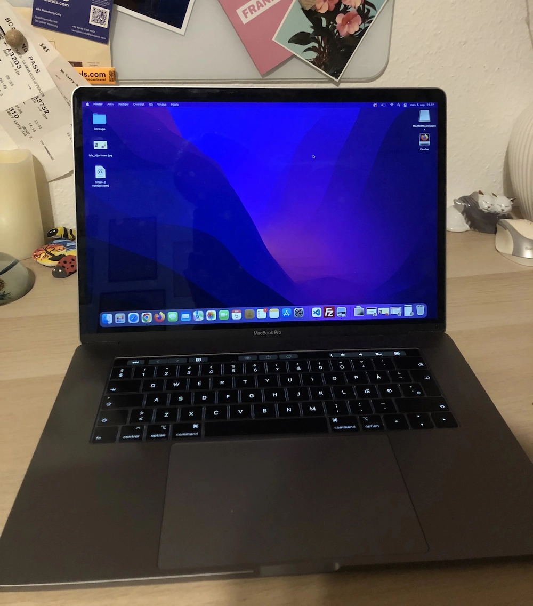

Min computer

Type
Macbook Pro 15 2018 med touch bar. Den er købt i august 2022 gennem greenmind, som "brugt" men er som i ny stand.
Specifikationer
Den har intel Core i7, 2,6 GHz. Skærmen er en 15.4" Retina med True Tone. Den har 16 GB RAM.